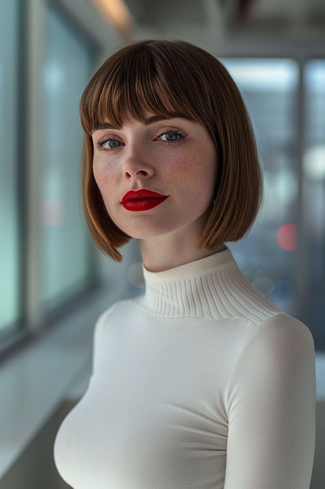
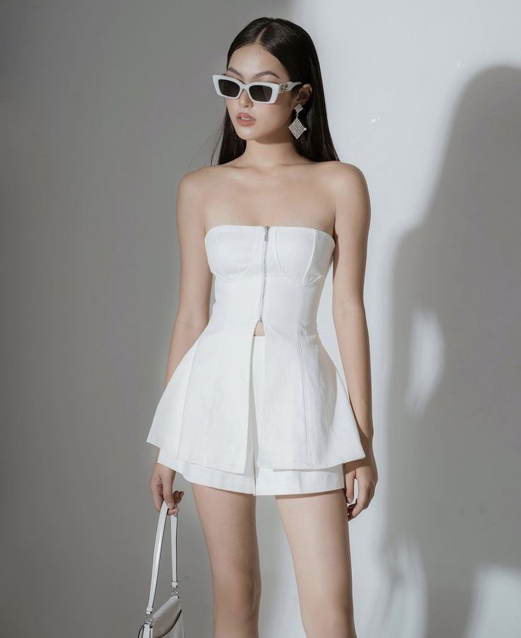
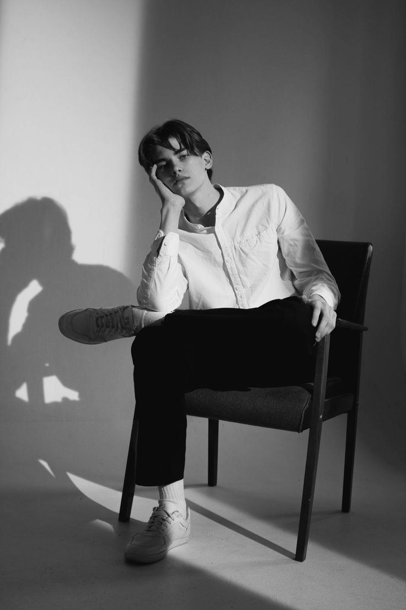

TRAYECTORIA ÚNICA
Un legado en construcción:
Un legado en construcción:
La trayectoria de un visionario
A lo largo de su carrera, Muzan Kibutsuji ha dejado una huella imborrable en la industria de la moda. Sus colaboraciones con diseñadores de renombre como Karl Lagerfeld y Marc Jacobs han dado como resultado campañas publicitarias icónicas que han marcado tendencia.
Además, ha trabajado con las modelos más cotizadas de la actualidad, capturando su belleza y personalidad de una manera única. Sus editoriales de moda para revistas como Vogue, Elle y Harper's Bazaar son un testimonio de su talento y creatividad.